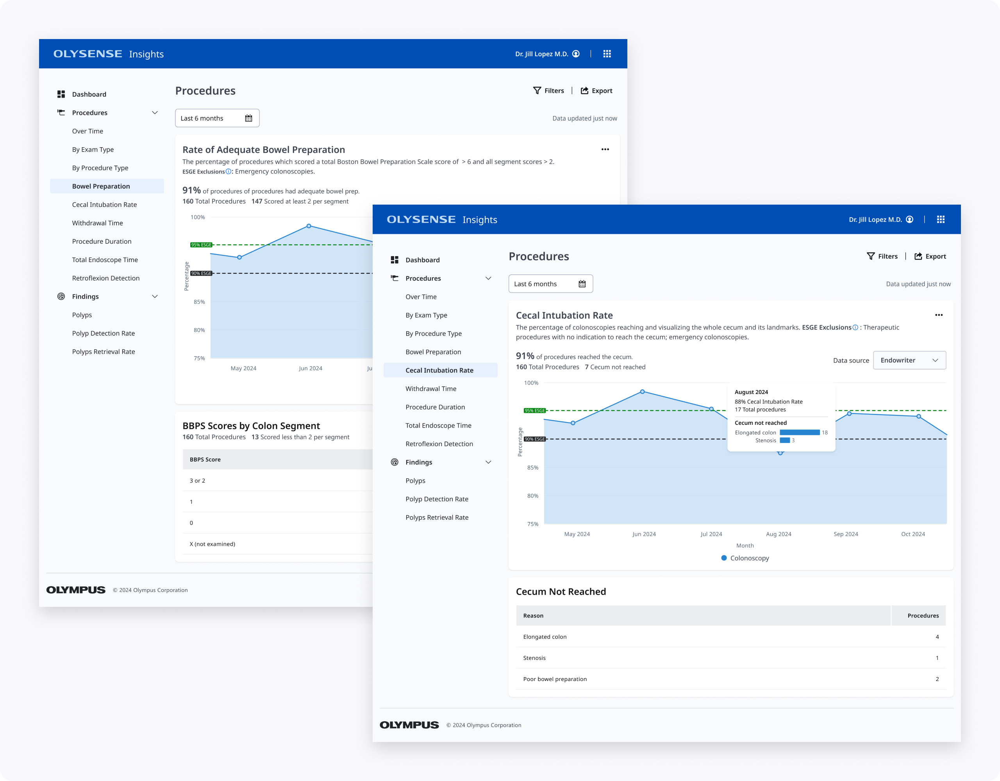
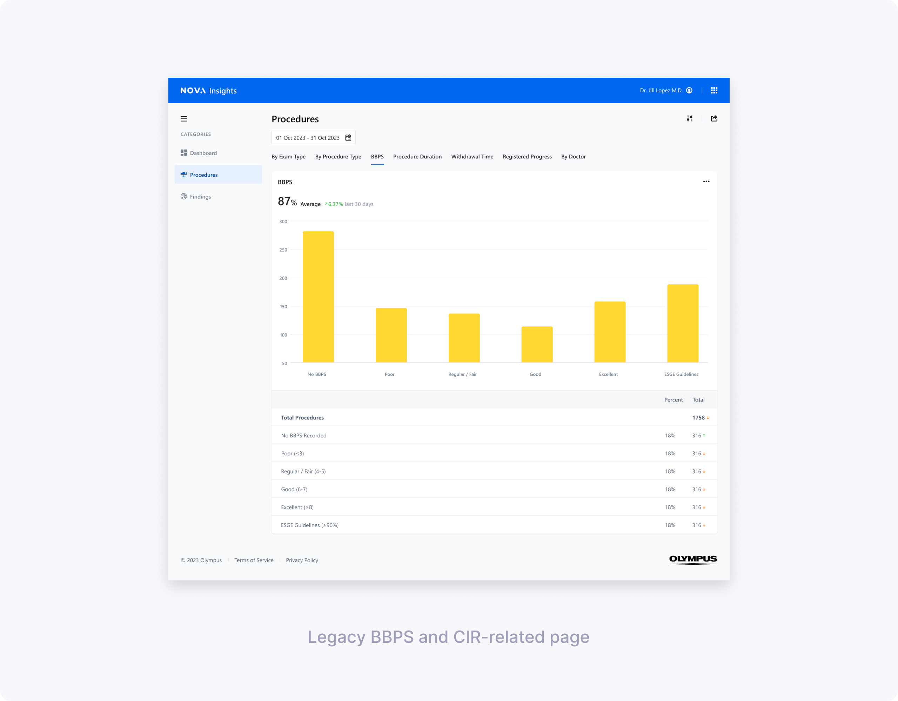
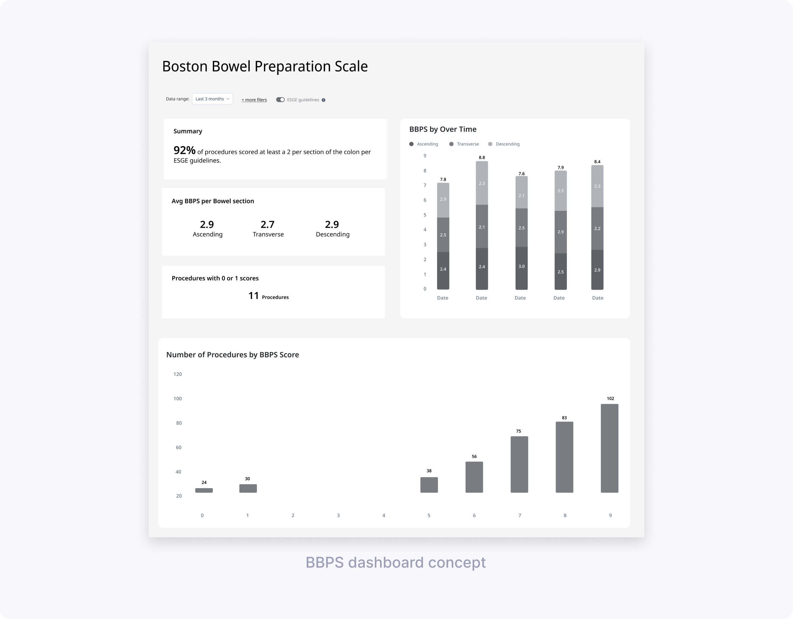
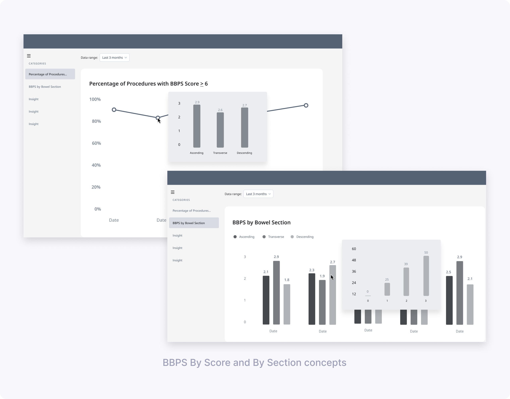
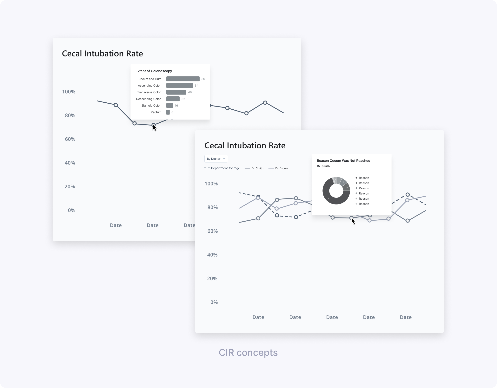
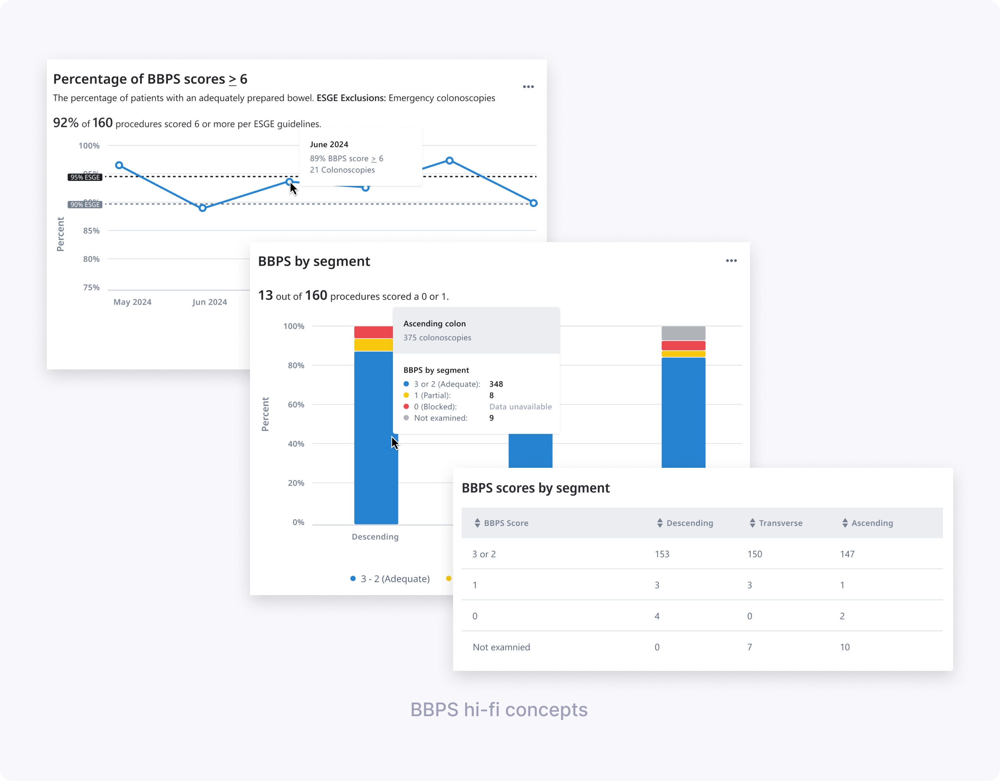
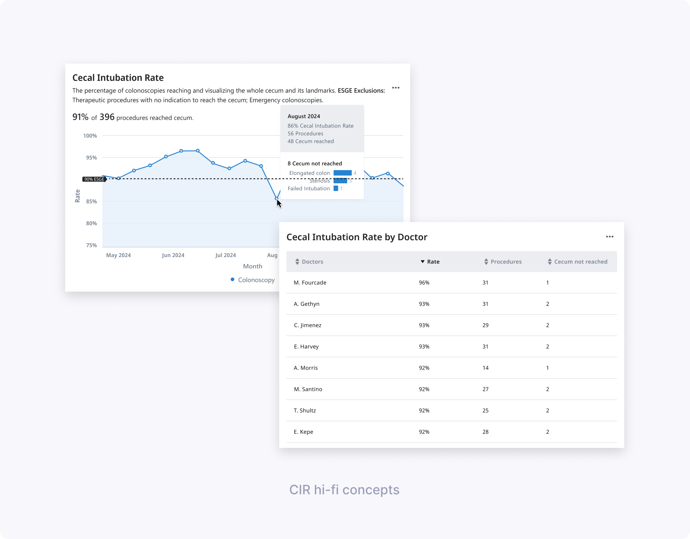
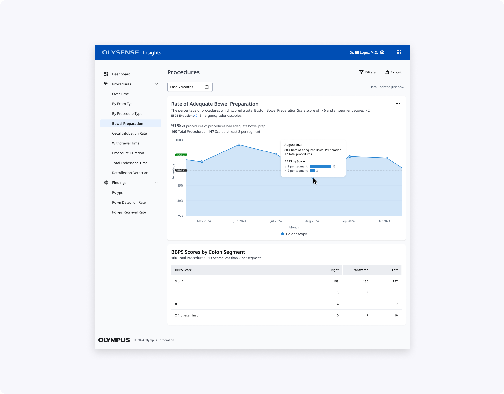
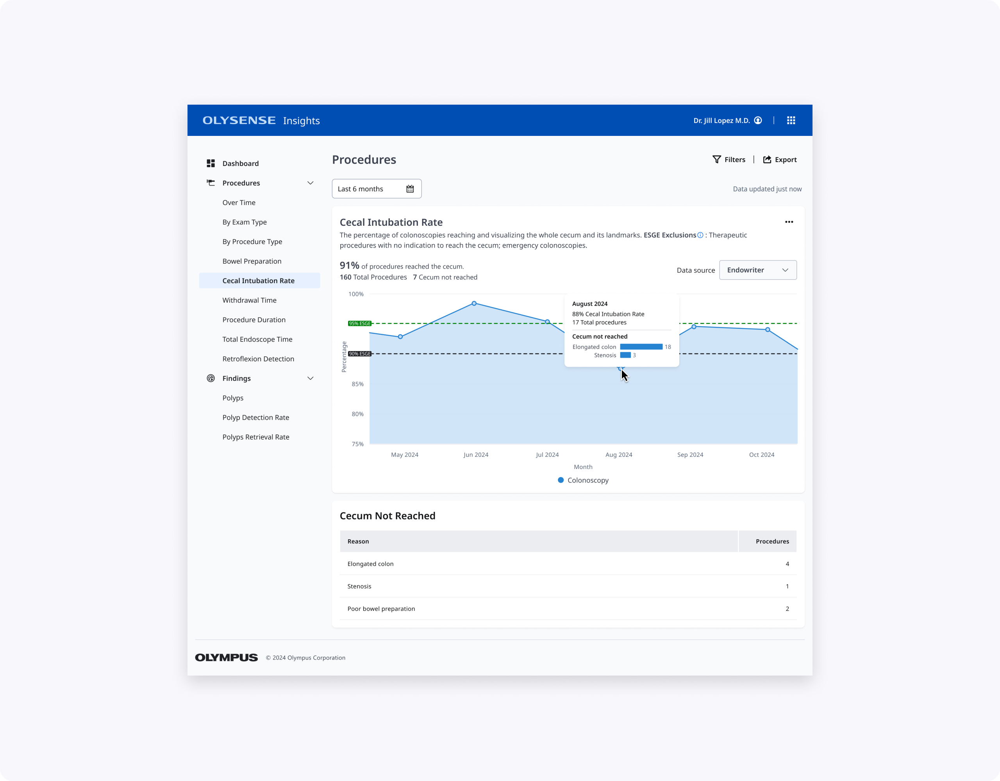
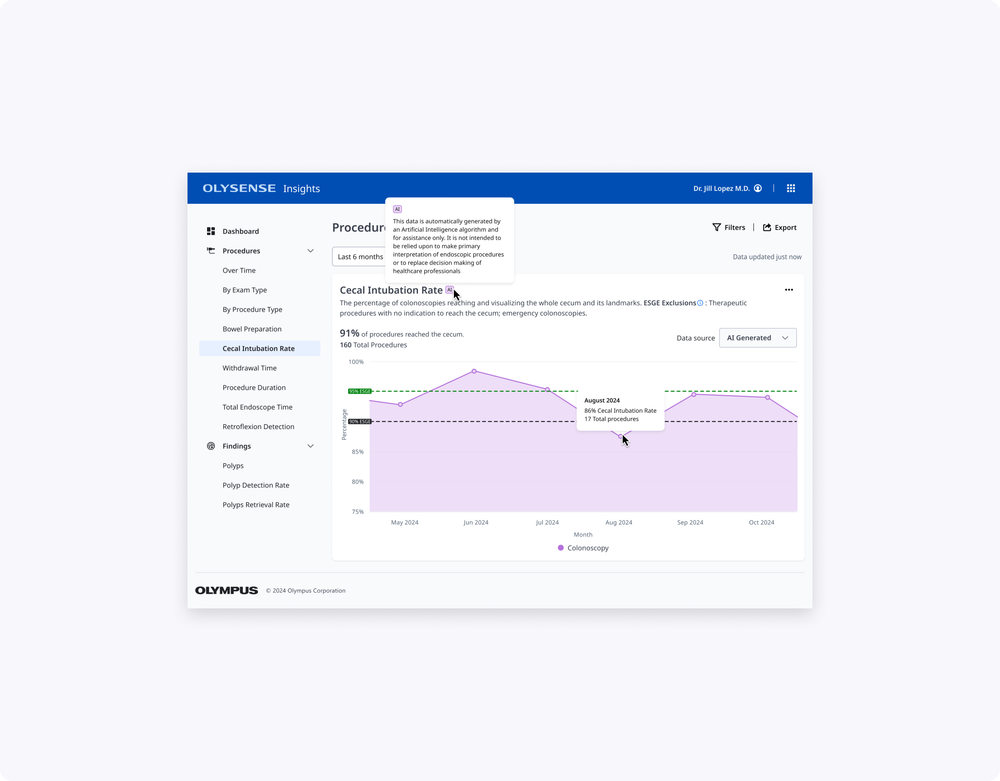

Contribution
My design partner and I redesigned the Boston Bowel Preparation Score (BBPS) and Cecal Intubation Rate (CIR) pages in OlySense Clinical Insights. I led the CIR design while she owned BBPS, making these critical colonoscopy quality metrics easier for endoscopists and endoscopy leads to understand and act on.
Together we led product design across the full process—synthesizing evaluation research, shaping low‑ and high‑fidelity concepts, partnering with UX Research on two rounds of studies, and iterating the charts and tables based on clinician feedback.

Understanding problems in the existing design
Initial evaluations showed BBPS and CIR were among the most valuable metrics but hardest to interpret. Less tech‑savvy directors struggled with BBPS column meanings and why averages showed as percentages. For CIR, users couldn't easily see cecal reach rates or understand why intubation failed.
My design partner and I split ownership—she focused on clarifying BBPS scoring logic and segment breakdowns, while I tackled CIR's "Extent of Colonoscopy" confusion and actionable reasons for incomplete procedures.

Low‑fidelity concept testing: BBPS & CIR
My design partner and I worked with UX Research to define concept‑testing goals and build low‑fi prototypes. She explored BBPS dashboard vs simpler charts; I tested CIR line charts with different hover drills (Extent vs Reasons cecum not reached).
We ran 60‑minute remote interviews with clinicians across two hospitals, using four concepts.
Key learnings for BBPS (led by my design partner):
- Focus on adequate vs low scores, not full score distributions.
- Segment breakdown essential for 0/1 scores indicating incomplete procedures.
- Simpler charts beat dense dashboards.
- “BBPS by doctor” didn’t make sense, since bowel prep quality reflects patient preparation rather than individual endoscopist performance.
- Users understood and appreciated an ESGE target line, and wanted to compare their data to that benchmark.


Key learnings for CIR (my focus):
- A simple line chart of CIR over time was easy to read and matched clinicians’ mental model for tracking trends.
- Clinicians were most interested in identifying low CIR periods and understanding why the cecum wasn’t reached.
- “Extent of Colonoscopy” did not help explain low CIR because users couldn’t tell whether reaching each landmark was actually intended.
- Showing reasons for not reaching the cecum (e.g., elongated colon, stenosis) on hover or in a linked chart was perceived as much more actionable.

Design directions from low‑fi:
- Define “passing” BBPS more clearly—either as total ≥ 6 or as at least 2 per segment, and treat scores with 0 or 1 as a distinct risk bucket.
- Group total BBPS into “under 6” vs “6 and over” for at‑a‑glance views and provide average BBPS over a time period rather than score‑by‑score counts.
- For CIR, carry forward the line chart with ESGE benchmark lines and add data about reasons cecum wasn’t reached.
High‑fidelity designs & usability testing
Using our OlySense design system, my design partner built hi‑fi BBPS prototypes while I created CIR designs. Together we partnered with UX Research on usability testing focused on core questions: "Are bowel preps adequate?", "Which segments score low?", "What's my CIR vs ESGE?", "Why no cecum reach?"
We tested:
- BBPS design 1: “Percentage of BBPS scores ≥ 6” over time, with ESGE benchmark lines and hover showing monthly percentage and procedure counts.
- BBPS design 2: “BBPS by segment” stacked bar chart + table breaking down scores per segment and highlighting how many procedures had a 0 or 1.
- Shared elements: simplified date picker with common ranges, and patterns for handling missing data in charts and tables.
- CIR designs for endoscopists and endoscopy leads: a main CIR KPI card + line chart over time, with tables and hovers explaining top reasons for not reaching the cecum and, for leads, CIR by doctor.
We co‑authored the research plan, discussion guide, and tasks, then co‑moderated seven 60‑minute remote interviews with clinicians across multiple hospitals. We observed how easily they completed tasks like finding inadequate BBPS months, identifying segments with low scores, and retrieving CIR per doctor.
Key findings for BBPS:
- The “Percentage of BBPS scores ≥ 6” chart was very helpful; all doctors understood their success rate and identified the lowest‑performing month.
- Some participants struggled to derive the exact number of procedures below ESGE guidelines from the chart and hover alone, and wanted clearer labeling.
- The concept of “adequate” needed to explicitly say “at least 2 per segment” so users could trust the calculation and description.
- Clinicians were split on the value of “BBPS by segment” in aggregate; some saw it as useful for understanding low scores, others found it too disconnected from individual cases.
- Terminology like “blocked” for score 0 and segment labels like “ascending/descending” were flagged as clinically incorrect or confusing; users wanted language that aligned with ESGE and their local practice (e.g., Right/Transverse/Left).
- The date picker was considered very easy to use; some doctors asked for more comparison options between months or years.
- Doctors recognized missing data states (e.g., dashed lines) but didn’t always discover the hover without prompting and were confused by overlapping gray colors for “data unavailable” and “not examined.”

Key findings for CIR:
- Participants easily found the percentage of CIR scores meeting ESGE guidelines and identified months below target using the line chart and benchmark line.
- The “Cecum not reached” table, especially when broken down by reason, was considered very helpful for understanding whether low CIR was due to patient factors or technique.
- Endoscopy leads valued the “CIR by doctor” table to see which doctors struggled more with cecal intubation, but still wanted context about case mix.

Design decisions from hi-fi
- Keep the “average adequate scores over time” BBPS chart, but clarify that adequate means a score of at least 2 in each segment, in both description and calculation, also make ESGE benchmark lines more visually distinct and show values above data points so users don’t rely solely on hover, and bring more prominence to the percentage and count of procedures that did not meet ESGE.
- Rethink “BBPS by segment” breakdowns: include either a bar chart or table, but not both at once, and fix terminology to match guidelines and clinician language.
- Move forward with the date picker and refine missing‑data states with clearer legends and hover text.
- For CIR, keep the line chart, reinforce ESGE threshold lines, and emphasize reasons for not reaching the cecum in both hover and supporting tables (including per doctor for leads).
Final design & impact
My design partner's BBPS contribution: "% BBPS scores ≥ 6" chart with explicit adequacy definition, plus segment view highlighting risky 0/1 procedures without overwhelming the page.

My CIR contribution: Clean line chart with ESGE thresholds, prominent KPI, and "Cecum not reached" table showing actionable reasons (not just Extent reached). Leads get CIR by doctor with context to prioritize coaching.


Together, these designs make BBPS and CIR easier to scan, interpret, and act on for clinicians with varying levels of technical comfort, while aligning terminology and thresholds with ESGE and local practice.
What I’d explore next:
- Adding side‑by‑side year or period comparison views (e.g., this year vs last year) to help teams see the impact of new prep protocols or training.
- Introducing filters for excluding legitimate non‑reach cases in CIR (e.g., severe stenosis), so rates more accurately reflect controllable quality.
Thanks for reading!